Items
Peak has a variety of items that the player can use to help cure status effects, increase player energy/stamina and aid in climbing the mountain.
| Icon | Name | Weight | Use |
|---|---|---|---|
 |
Antidote |  2.5 2.5 |
⦾ Removes 35 Poison. ⦾ Removes 10 Heat. |
| 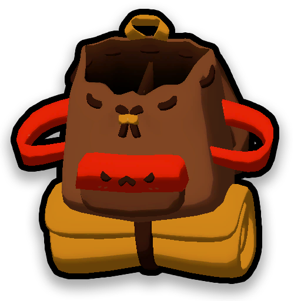 | Backpack | 0 |
⦾ Found at the crash site and at campfires. ⦾ Increases inventory space allowing the holder to carry 4 more items. |
| 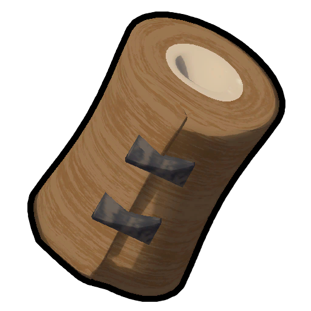 | Bandages | 2.5 |
⦾ Removes 30 Injury on use. ⦾ Takes 4 seconds to use and gains a bonus 10 stamina when cooked. |
| 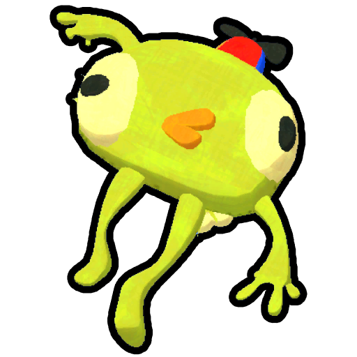 | Bing Bong | 5 |
⦾ Can be used for the bing bong badge. ⦾ Bing Bong was used to talk to streamers on occasion but was sadly removed from the game in june 2025. ⦾ Players can ask Bing Bong "yes or no" questions. |
| 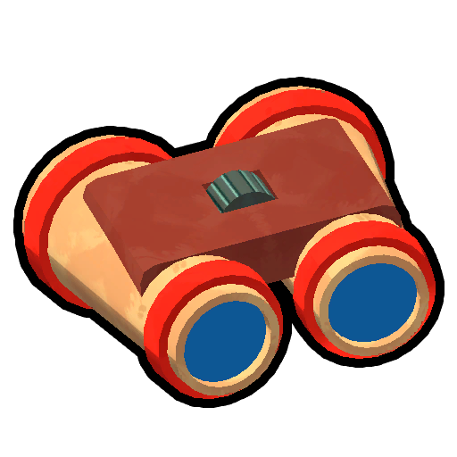 | Binoculars | 0 |
⦾ Can be used for the Astronomy badge. ⦾ Can be used to zoom in and see further distances. |
| 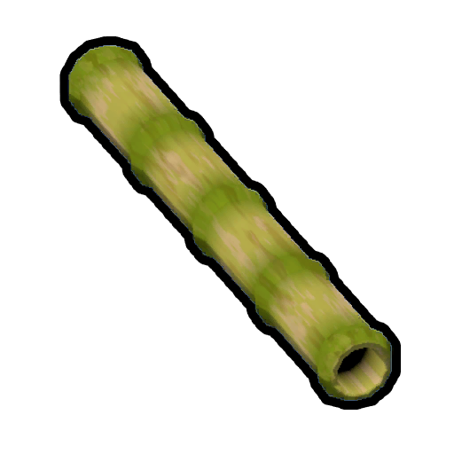 | Blowgun | 2.5 |
⦾ Can be used to shoot a player with a dart which will cause these effects: ⦿ Clears all status effects except curse. ⦿ Inflicts 120 Drowsy. ⦿ Cannot spawn in solo play. |
| 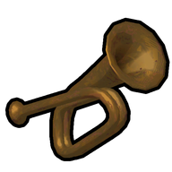 | Bugle | 0 |
⦾ Plays a musical Note when used. ⦾ Can be used to unlock the Animal Serenading Badge. |
| 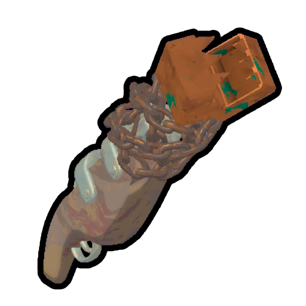 | Chain Launcher | 2.5 |
⦾ Fires a length of chain which can be used to connect two points allowing the player to climb across similar to a vine. ⦾ The chain is fired from the point where the user fired the launcher. ⦾ The chain cannot be fired upwards. |
| 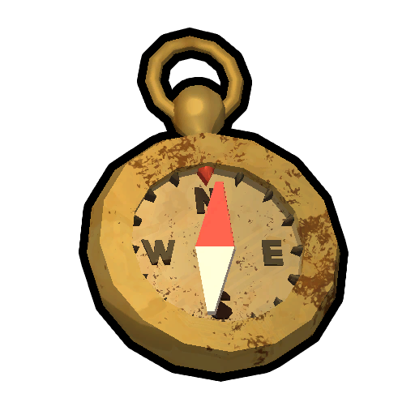 | Compass | 0 |
⦾ Points towards the Peak biome located at the very top of the island. |
| 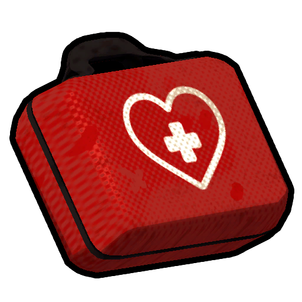 | First Aid Kit | 5 |
⦾ Removes 100 Poison. ⦾ Removes 100 Injury. ⦾ Takes 5 seconds to use. ⦾ Cooking gives 10 bonus Stamina. |
| 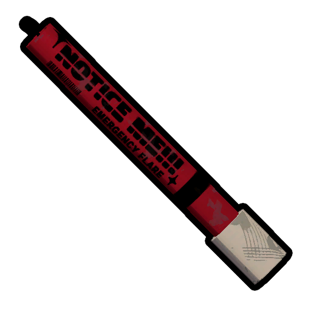 | Flare | 0 |
⦾ Can be lit causing a tall column of colored smoke which matches the players scout color. ⦾ Summons the rescue helicopter at the top of the mountain when used at the peak. |
| 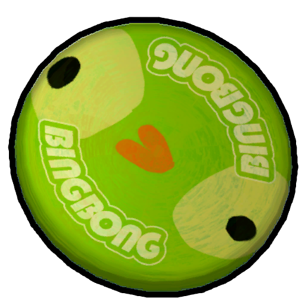 | Flying Disc | 0 |
⦾ Can be charged and thrown at other scouts to knock them over. ⦾ Can be used for the Ultimate Badge. |
 |
Guidebook | 0 |
⦾ Shows a step by step guide on how to play the game. |
| 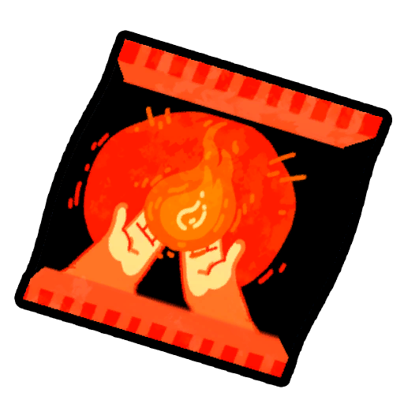 | Heat Pack | 0 |
⦾ Removes 360 Cold over 60 seconds. |
| 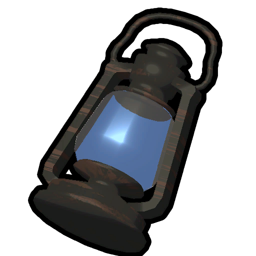 | Lantern | 5 |
⦾ Removes 150 Cold over time. ⦾ When lit it can be placed in the backpack to remove Cold passively doing so will deplete its charge over time. |
| 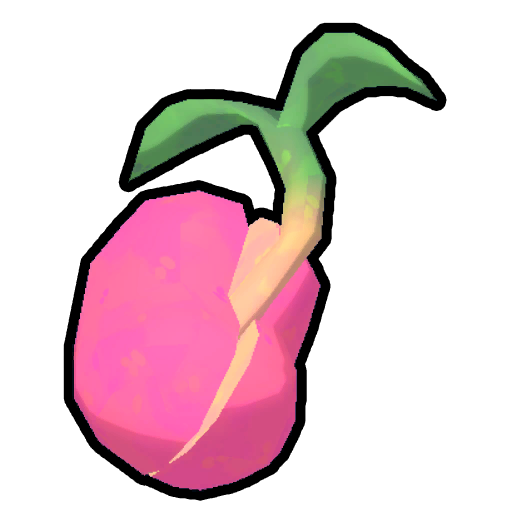 | Magic Bean | 2.5 |
⦾ Once dropped after 3 seconds have passed a large vine will grow up to 10 metres tall if unobstructed. |
 |
Parasol | 2.5 |
⦾ Used for sun protection. ⦾ Can be used to slowly descend. |
 |
Pirate's Compass | 0 |
⦾ Points to the nearest unopened luggage. |
| 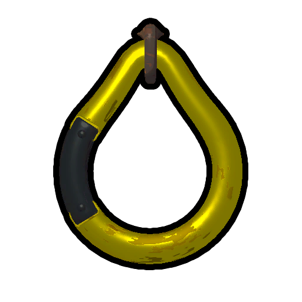 | Piton | 2.5 |
⦾ When placed on a climbable surface it will provide a safe point for scouts to grab on. ⦾ Scouts can regenerate stamina while grabbing onto a deployed piton. |
| 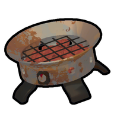 | Portable Stove | 5 |
⦾ Used to cook items. ⦾ Lasts for 60 seconds after being placed. |
| 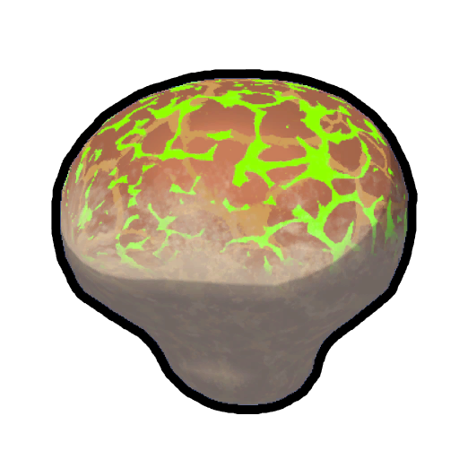 | Remedy Fungus | 2.5 |
⦾ Creats a smoke zone that over time removes 17.5 Injury from every scout in the radius |
| 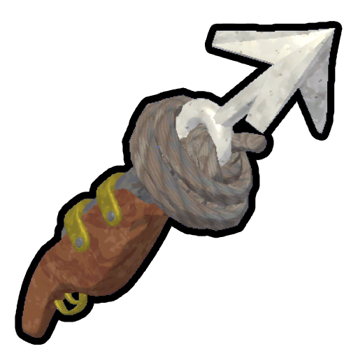 | Rope Cannon | 2.5 |
⦾ Fires a harpoon with a rope attached it will drop a length of rope on contact with a compatible surface. |
| 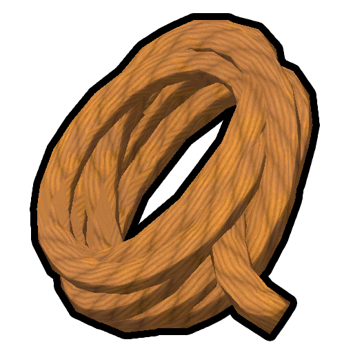 | Rope Spool | 2.5 |
⦾ Creates a length of climbable rope with a limit of 10 metres that can be attached to any climbable surface. ⦾ Rope is affected by gravity. ⦾ Each spool is 12.5 metres long. |
| 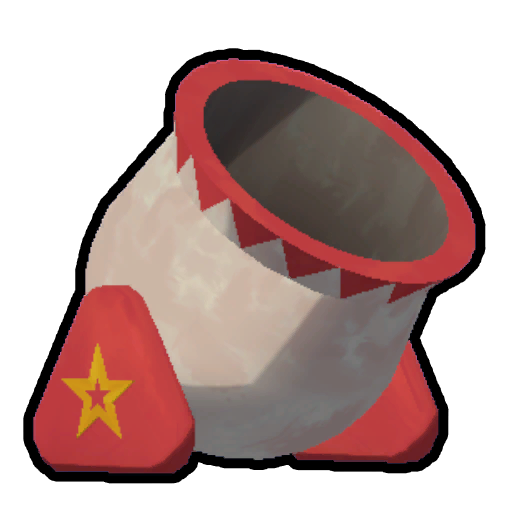 | Scout Cannon | 15 |
⦾ When used, places down the cannon. ⦾ Once you are inside the cannon after the fuse has been lit, you will get launched out and sent flying. ⦾ Cooking gives 10 bonus energy. |
| 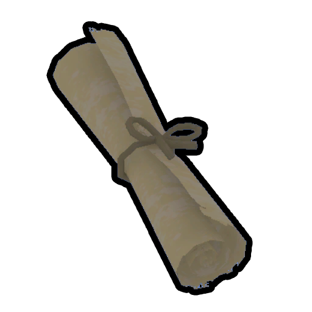 | Scroll | 0 |
⦾ Can be opened to reveal a torn page of the scout masters journal entries. |
| 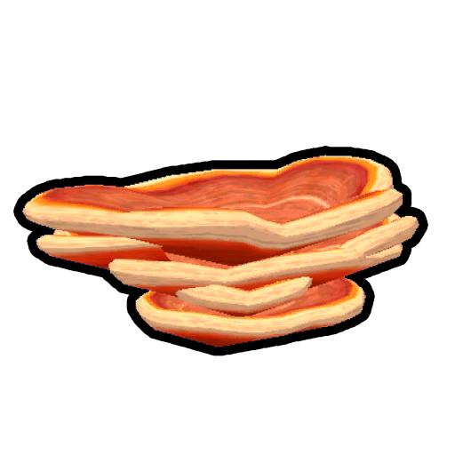 | Shelf Fungus | 2.5 |
⦾ Creates a platform when it is thrown at a wall. |
| 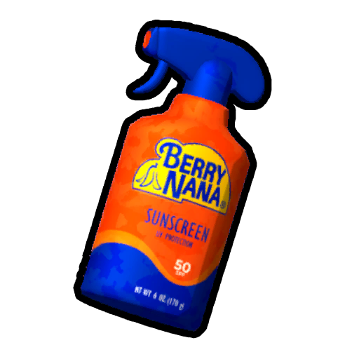 | Sunscreen | 2.5 |
⦾ Provides temporary protection from the sun for 90 seconds. |
| 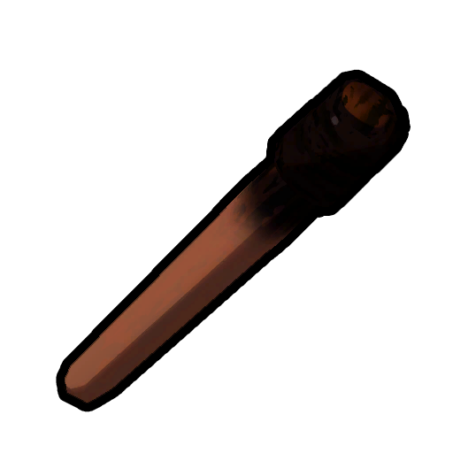 | Torch | 0 |
⦾ Found within the Tomb hidden in the mesa biome. ⦾ Provides a temporary light source. |
Mystical Items
Within peak there as a vast amount of items but these listed below are the rarest and most unique of the bunch. These items are usually located at the end of each climb if no scouts died and are sometimes found within ancient luggage as well.

| Icon | Name | Weight | Use |
|---|---|---|---|
| 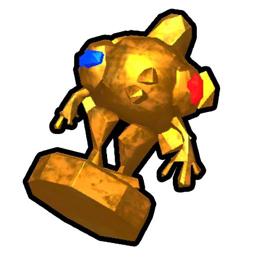 | Ancient Idol | 40 |
⦾ Found exclusively within the Tomb. ⦾ Grants the player full invincibility when held, the player will still receive knockback. ⦾ Prevents consumption of bonus stamina when held actively. ⦾ Can be thrown into the lava located within the kiln to recieve the 24 Karat Badge. |
| 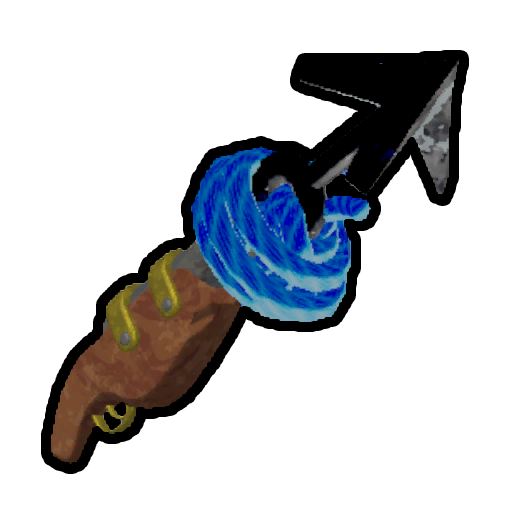 | Anti-Rope Cannon | 0 |
⦾ Shoots a harpoon that will deploy a length of gravity defying anti-rope on contact with a compatible surface. ⦾ A dropped anti-rope Cannon can float away!! |
| 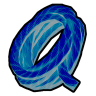 | Anti-Rope Spool |
-2.5
|
Creates a length of climbable anti-rope with a max length of 10 metres that can be attatched to any climbable surface. ⦾ Each spool contains 12.5 metres of anti-rope. ⦾ A dropped spool of anti-rope will float upwards!! |
| 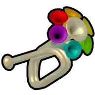 | Bugle of Friendship |
2.5
|
⦾ Plays a musical note when used. ⦾ Nearby scouts gain 0.5 seconds of infinite stamina. ⦾ Can be used for the Animal Serenading Badge. ⦾ Cannot spawn in solo play. |
| 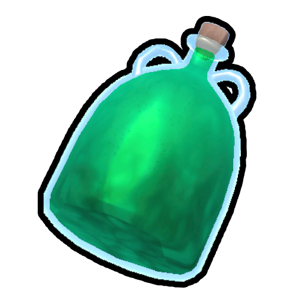 | Cure-All |
2.5
|
⦾ Has 3 uses. ⦾ Removes 20 Hunger, 35 Poison, 35 Injury, 35 Drowsy, 35 Cold, 35 Heat, 25 Thorns and 5 Curse. ⦾ Cooking gains 10 bonus stamina. |
| 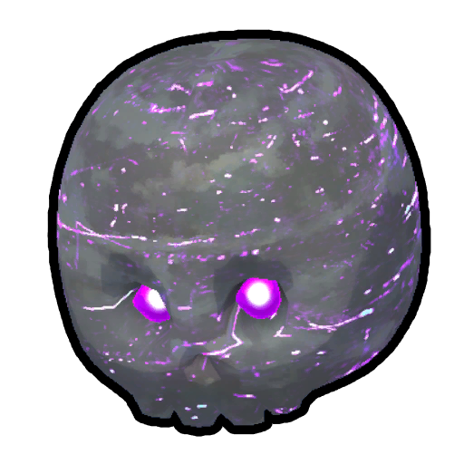 | Cursed Skull | 5 |
⦾ Use instantly kills the scout holding it and gives all our scouts 50 bonus stamina and cleanses all negative status effects aside from Curse. ⦾ Can only be found in Ancient Luggage. ⦾ Cannot spawn in solo play. |
| 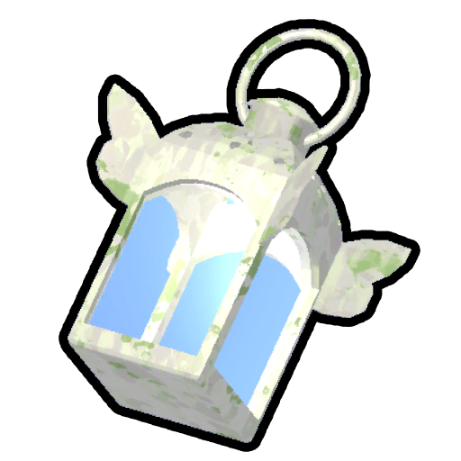 | Faerie Lantern | 5 |
⦾ Removes 75 Heat, 150 Cold, 75 Poison, 150 Drowsy and 75 Injury. ⦾ Will work similary to the lantern when placed in the backpack. |
 |
Pandora's Lunchbox |
2.5
|
⦾ Has 3 uses. ⦾ Clears all status then randomizes Hunger, Bonus stamina, Injury, Poison, Cold, Heat and Drowsy. ⦾ Cooking has zero effect. |
| 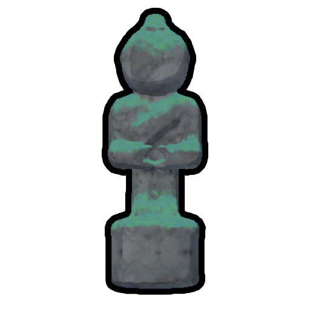 | Scout Effigy | 5 |
⦾ Used to revive a dead scout at the target location. ⦾ Cannot spawn in solo play. |
 |
Scoutmaster's Bugle |
2.5
|
⦾ User and nearby scouts gain 100 bonus stamina. ⦾ Summons the Scoutmaster for two minutes and marks the user as his target. ⦾ Much rarer than the other mystical items. |